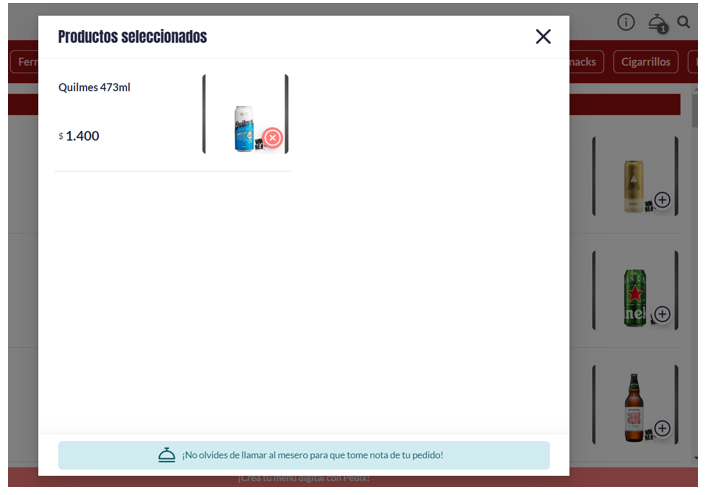

Hola soy Pao una profesional Tester Manual QA, quien te invita a conocer su formación en testing
¡¡¡Vamos empecemos!!!
Te cuento que en este curso aprendi a construir planes de prueba eficientes para el Desarrollo de Software y garantiza la calidad de los procesos a la hora de crear productos IT. Es mi meta poder compartirte las herramientas y técnicas que utilice.
En los siguientes módulos encontraras una selección de ejercicios realizados por mi, durante el aprendizaje y puesta en escenas con casos reales de pruebas de softwares.
Lo que me ayudo a consolidar y complementar los conocimientos adquiridos en la formación.
Módulo 1
: Ejercicios de Testing, Tipos y Técnicas de Pruebas
Módulo 2
: Ejercicios de Casos de pruebas y Trazabilidad
Bueno empecemos entendiendo que el testing involucra toda la actividad que hará
el Tester, desde que comienza a conocer el
requerimiento solicitado, hasta que interactúa
con el sistema. Está compuesto por actividades
que permiten cuantificar la calidad de un
sistema en un momento determinado.
Entonces aclaremos ¿Qué es calidad?;
Según el Glosario de Ingeniería de Software del
IEEE, calidad es: “El grado en el cual un sistema, componente, o
proceso satisface los requerimientos especificados y las expectativas o necesidades del cliente”
Hay que diferenciar también Quality Control y Quality Assurance.
Ahora si puedo mostrate como desarrolle una actividad de prueba con la pagina E-commerce de venta de bebidas de un amigo, aplicando los pasos para hacer calidad, con un testing exploratorio. Aqui mi objetivo fue poder aplicar los pasos de “cómo hacemos calidad” en un producto, que en este caso es Winneryvm. E identificar los tipos de pruebas y niveles del testing.
• Objetivo de prueba: validar y verificar la venta online de bebidas con pago por transferencia y selección de envió.
• Proyecto: Bajo el supuesto que hay un cliente que habla con el Product Owner, y éste le comunica al equipo de trabajo, donde soy parte con mi ROL de TESTER QA, los requisitos impuestos para trabajar con una metodología Ágil. Siguiendo este ejemplo hipotético, los desarrolladores serían quienes se encargon de hacer el sistema web y por otro lado, las pruebas (que evalúan el requerimiento principal del cliente) las realizaria yo como tester, tratando de cumplir lo más fehacientemente posible con lo solicitado por el cliente. Por lo que las ejecute siguiendo los principios y fundamentos del Testing.
El tipo de prueba fue dinamica, funcional, basada en la experiencia, exploratoria. Y se aplicaron los pasos de la calidad.
1-Validar si cumple el propósito del producto: que tiene como
principal objetivo que las personas puedan comprar en la página bebidas, y dos de los secundarios serán que puedan pagar con transferencia desde la misma web y elegir la forma de entrega.
Abajo veran que tras evaluar 2 veces el producto, el resultado de la validación es fallido para comprar y pagar on-line o con transferencia. Y Es exitoso para seleccionar la forma de entrega.
Falla1 No es posible comprar con pago on-line o transferencia, se intento ingresando desde el menú principal opción catálogo. En la primer imagen se visualiza, el menu principal de la pagina de donde se puede acceder, luego se seleeciona el acceso desde categorias, donde hay un segundo menu con los productos de venta, en la tercer imagen selecciono un articulo para comprar(cerveza), luego se valida que se carga al carrito de comprar y en la siguiente imagen al ingresar para pagar vemos la Falla1, cuando nos sale un mensaje que dice "no olvides llamar al mesero para que tome tu pedido", en lugar de un menu con opciones de pago o con la informcion correspondiente para hacer una transferencia

Evidencia de prueba Falla2, en la compra con pago on-line pero desde menú poción delivery, no desde catálogo.
Continuemos con los otros pasos de analisis de la calidad
2- Atributos que posee el producto Winneryvm:
Menú de categorías de bebidas
Productos con imagen, descripción y precios
Permite seleccionar productos
Permite cargar los productos al carrito de compra
Permite confirmar el pedido desde el menú delivery
Permite seleccionar la forma de envio.
Atributos que no posee:
no se puede comprar-pagar online
no se puede realizar una transacción de pago por transferencia online
no se puede confirmar un pedido desde el menú categorías
3. Cuantificación de atributos.
Menú de categorías de bebidas 5
Productos con imagen, descripción y precios 5
Permite seleccionar productos 3
Permite cargar los productos al carrito de compra 3
Permite confirmar el pedido desde el menú delivery. 3
4. Definición de patrones de medición o métricas.
De 1 a 5 siendo 1 no satisfactorio la funcionalidad y 5 muy satisfactoria la funcionalidad.
5. Medición del producto o una muestra de él.
Del 100% de las muestras utilizadas, 0% de las mismas cumplen con el requisito principal del cliente (compra online).
Del 100% de las muestras utilizadas, 100% de las mismas cumplen con el requisito secundario de que permitir seleccionar forma de entrega
Del 100% de las muestras utilizadas, el 0% cumple con el requisito secundario de que sea pueda pagar con transferencia online
Las pruebas realizadas incluyeron:
Ingresar a la pagina
Seleccionar un producto desde menú catalogo-
Seleccionar un producto desde menú delivery-
Agregar productos para comprar al carrito-
Confirmación de pedido-
Completar datos solicitados de pedido-
Selecciona forma de entrega-
Intento de pago por transferencia-
Intento de pedir por wsp.
6. Otras Pruebas que pudieron haberse realizado:
Probar el botón ver mi pedido en lugar de verlo desde el carrito
Seleccionar forma de entrega retiro en el local
Ingresar desde el menú principal categoría wsp.
7. Aprobación de desvíos:
Primer desvió: Cuando ingreso a la página, hago clic en menú, sobre el botón catálogo, luego ingreso al menú categorías de bebidas y hago clic en la categoría cerveza, a posterior se abre un menú con todos los productos en esa categoría y selecciono el producto una cerveza Quilmes de 473ml, la agrego al carrito con el botón +, se selecciona y se agrega al carrito, pero cuando voy al menú superior izquierdo y hago click para realizar el pedido o finalizar la compra se abre una imagen con el producto seleccionado y un cartel que dice “¡No olvides de llamar al mesero para que tome nota de tu pedido!.
Segundo desvió: Si ingreso a la página desde al menú botón de delivery, me redirige al menú categorías de bebidas, selecciono el botón de la categoría cerveza, selecciono una cerveza Quilmes de 473ml, se abre una ventana con el producto el precio y el botón agregar, hago clic en el botón y se agrega automáticamente al carrito, se cierra la ventana y visualizo un botón celeste para ver el pedido si hago clic se abre una ventana donde visualizo el pedido, allí hago clic en el botón confirmar pedido y se abre un formulario a completar. Lo mismo si luego de agregar el producto voy directamente al menú superior izquierdo (en lugar de hacer clic en botón celeste para ver el pedido) donde se agregó la selección del producto, hago clic y se abre una ventana donde visualizo el pedido, allí hago clic en el botón confirmar pedido y se abre un formulario a completar con nombre, teléfono y FORMA DE ENTREGA, completo con datos inválidos de nombre y teléfono y me lo permite, luego selecciono el botón delivery, se abre un campo para rellenar con la dirección de entrega y un mensaje con costo del delivery en $1500.
También hay un botón para pedir por wsp, intento realizar el pedido por wsp y se visualiza otra falla cuando no se redirige la página al link a wsp para poder pedir.
Por ultimo aqui anexo este diagrama que realice con los tipos y niveles de pruebas. Los niveles de pruebas están asociados al "qué" se prueba pero considerando el sistema como un conjunto de partes; en esa medida cada nivel de pruebas se enfoca en un nivel de composición de partes del sistema .
Existen 4 niveles de pruebas: unidad, integración, sistema, aceptación, estan encuadrados con color naranja. Mientras que el Tipo de Prueba esta asociado a procesos en los que se verifica la funcionalidad y rendimiento del software y estan en circulos verdes. El resto son el nombres de las técnicas de pruebas y subclasificaciones de estudio.
Casos de pruebas y Trazabilidad
Aqui realice ejercicios de casos de pruebas (Es la
unidad de trabajo fundamental del testing y
usualmente se define al inicio del proceso de
pruebas.) que me permitieran
evaluar la funcionalidad de un sistema hipotetico, bajo
ciertos datos, contexto y entorno. Para así validar y
verificar si se comporta como se espera.
Ahora les muestro como Diseñe dos casos de prueba, uno positivo y otro negativo, especificando desde qué navegador y con qué medio de pago debia probarse, cree una
matriz de casos en Excel, para la compra de pasajes
en la siguiente página:
www.blazedemo.com.
Partiendo del concepto de que un Caso de prueba segun ISTQB es un “Conjunto de valores de entrada, precondiciones de
ejecución, resultados esperados y postcondiciones de
ejecución, desarrollado con un objetivo en particular o
condición de prueba, tales como probar un determinado
camino de ejecución o para verificar el cumplimiento
de un requisito determinado.”
Este es otro ejemplo que realice de un Diseño casos de prueba pero esta vez para la compra de una
heladera de Mercado Libre
Se pueden hacer Casos de Pruebas según tecnicas, aqui les muestro como diseñe casos positivos y negativos en base a la técnica arbol de decisión, para un depósito de dinero en una
cuenta corriente en un cajero automático bancario.(Un árbol de decisiones es una estructura similar a un diagrama de flujo en el que cada nodo interno representa una "prueba" sobre un atributo).
Y si quisieramos obtener una lista de casos de prueba, para probar el acceso a la sección de Contribuyente de la
AFIP se veria algo asi...
Uno de los aspectos más importantes en el
diseño de pruebas es el de asegurar que el Tester
logra cubrir con sus casos de prueba cada uno de
los requerimientos solicitados por el usuario.
Esta cobertura suele reflejarse en una matriz de
trazabilidad lo cual podrá mostrar si queda
algún requerimiento que no esté siendo evaluado
por un caso de prueba. Aqui a continuación les compartire como seria una matriz de trazabilidad segun la planilla de casos de prueba para un login y seleccion de compar de un producto de la pagina
www.saucedemo.com.
Bugs
Luego del diseño de casos de prueba, viene la ejecución de pruebas.
Durante la ejecución se llevarán a cabo cada
uno de los casos de prueba que fueron definidos
y llega el momento de comparar el resultado
esperado vs. el resultado obtenido.Cualquier desviación entre el resultado
esperado y el resultado obtenido que ocurra
durante la ejecución de un caso de prueba será
un bug que deberá ser reportado para su
resolución, antes que el sistema llegue al usuario
final.
La prueba será Exitosa si el resultado esperado coincide
con el obtenido y será Fallida en caso contrario.
En este ejemplo, registro
los defectos encontrados despues de jecutar los casos de prueba que realice en los ejercicios en el módulo2 para la compra de
pasajes del link: https://www.blazedemo.com/
Uso planillas de excel con los Atributos de un bug, documentan el ciclo de vida del bugs, tambien sirve para crea otra planilla de reporte y hacer el seguimeinto del mismo.
Id: identificador único.
Descripción: título breve del bug.
Datos: datos necesarios para ejecutar el CP y obtener el bug.
Tipo: de software, de datos, de ambiente, de
interconexiones, etc.
Prioridad (severidad): identifica cuál es la
importancia del bug.
Ciclo: etapa en la que fue encontrado
Status: abierto, en proceso, asignado, resuelto,
cerrado, anulado.
Tester: responsable que encontró el defecto.
Evidencia: print-screen, archivo o foto en
donde se visualiza el bug.
Asignado: responsable (desarrollador) que
resolverá el bug.
Y en el siguiente video les meustro la Matriz o Planilla de bugs como resultado luego de identificar algúnos bug del desarrollo de la pagina www.saucedemo.com.
Quizas te preguntes
¿Cómo hice para identificar los bugs encontrados? ¿En qué base el proceso?...
Y te cuento que simplemente ejecute los casos de prueba de login y selección de producto, que te mostre como los diseñe en los ejercicios tambien del módulo2, cuando fui explorando el sistema.
Luego para el reporte de bug-defectos, los
enumere, (previamente se debe haber chequeado si no fueron ya reportados, si hay un documento donde hacerlo).
Y profundice la descripción de los defectos, completando todos los atributos referenciados a la prueba en un documento o planilla.
Siguiendo las buenas prácticas de :
1. Describir muy claramente la falla que está ocurriendo.
2. incluir los datos que fueron utilizados para reproducirla.
3. Si la falla no se reproduce siempre, indicar bajo qué circunstancias se pudo reproducir.
4. Incluir evidencias.
5. Indicar el resultado que se espera obtener y el que se obtuvo.
Imagenes del video anterior de matriz de bugs Swag Labs (www.saucedemo.com) En la primer imagen esta la mitad de la planilla, que continua en tal cual se visualiza en la imagen posterior de abajo.
Por ultimo aqui esta mi desarrollo de una planilla de REPORTE de Bugs en base a la pagina tambien de Sauce pero este bugs pertence al ingreso con un diferente usuario por eso veran que cambia el producto.